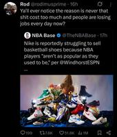

0


0
"Motorola has filed a lawsuit in India against social media platforms and content creators," reports TechCrunch, "over posts it alleges are defamatory..."
The lawsuit, filed in a Bengaluru court and obtained by TechCrunch, names platforms such as X, YouTube, and Instagram along with dozens of content creators, and seeks takedown of the content as well as broader restraint on what it describes as false or defamatory material related to the company's devices. In its over 60-page filing, Motorola has sought a permanent injunction restraining the defendants from publishing or sharing what it describes as false or defamatory content about its products, including reviews, videos, comments, and boycott campaigns.
The complaint cites hundreds of posts across platforms, including videos alleging device issues and phones catching fire. But it is also targeting unfavorable product reviews and user commentary that the company alleges are false or defamatory. In a statement after publication, a Motorola spokesperson said it had initiated legal action "in the interest of public safety" against what it described as demonstrably false claims that its devices had exploded or caught fire.
One online creator told TechCrunch "they expect more such legal action in the future, as evolving rules around online content increase liability for creators and platforms — a trend reflected in recently proposed changes to India's IT rules aimed at tightening oversight of online content."
A Motorola spokesperson "said the company did not seek to suppress legitimate reviews or criticism and was reviewing the scope of the proceedings, adding that it apologized to creators affected inadvertently."
Read more of this story at Slashdot.
"A trailer has been released for the first film to star an authorised generative AI version of a major Hollywood actor," writes The Guardian:
Val Kilmer was cast in western As Deep As the Grave before his death in April 2025. Production delays meant he never shot any scenes, but the creative team worked with UK-based company Sonantic to create an AI speaking voice based on his old recordings. His estate and daughter Mercedes collaborated with the film-makers on the visual deepfake of the actor. Kilmer, who was diagnosed with throat cancer, was also assisted by technology for his cameo in 2022's Top Gun: Maverick...
Writer-director Coerte Voorhees confirmed that Kilmer is seen for around an hour of the film's running time... Voorhees has said that the production followed Sag-Aftra [union] guidelines, and that Kilmer's estate — which provided archival material for them to use — was compensated financially.
"Kilmer's likeness can be seen portraying Father Fintan, a Catholic priest and Native American spiritualist," adds The Hollywood Reporter. But the AV Club calls it "ghoulish puppet show time."
"Having your AI Val Kilmer puppet whisper 'Don't fear the dead, and don't fear me' in a movie trailer is a bold choice..."
He is accompanied (per Variety) by a whole host of disclaimers, caveats, and explanations offered by writer-director Coerte Voorhees and his associates: Kilmer deeply wanted to be in the movie, but was too sick to do so. His family endorses and supports his inclusion. He was a big fan of technology, including, presumably, its use in turning his own image into a digital avatar to then shove into movies...
The fact is, of course, that nobody would be paying a fraction of this attention to As Deep As The Grave — about early female archeologist Ann Axtell Morris — if it weren't now being used as the stage on which Voorhees was very publicly accepting the dare to go full-on ghoulish with AI tech.
"The filmmakers said they hoped they were showing Hollywood how to use the technology in a positive way..." notes Australia's ABC News. But their articles add that "Some have called the trailer 'terrifying' and 'disgusting' on social media."
Mashable writes:
"Very fitting that this trailer includes a scene where a corpse is unceremoniously yanked out of the ground," read one of the top comments on As Deep as the Grave's trailer at time of writing... [O]nline commenters have labelled it disgusting and disrespectful, not only for digitally reanimating Kilmer but also for the damaging precedent As Deep as the Grave's use of AI could set for the film industry as a whole.
Read more of this story at Slashdot.
Slashdot reader Bismillah shared this report from ITNews:
Research and development engineer Romain Marchand of Paris headquartered Quarkslab obtained a telematic control unit (TCU) from a salvage yard in Poland... Marchand tore down the TCU, which is based on a Qualcomm system on a chip, and extracted the Linux-based file system from the Micron multi-chip package (MCP) which contained NAND-based non-volatile storage memory. The non-volatile storage contained sensitive information, including system configuration data and more importantly, logs that revealed the vehicle's GPS positions over time.
None of that information was encrypted, Marchand told iTnews, which made it possible to collect and retrieve sensitive data of interest. What's more, the global navigation satellite system (GNSS) logs with GPS positions covered the BYD's full journey from the factory in China to its operational life in the United Kingdom, and to its final wrecking in Poland, Marchand explained in an analysis... The issue is not restricted to BYD, and Marchand added that the hardware architecture of the Chinese car maker's TCU is broadly similar to what can be found in other brands.
Read more of this story at Slashdot.
"From 2008 to 2024, the number of four-year computer science degrees granted rose about fivefold..." reports the Washington Post. Then in 2025 CS suddenly dropped from the fourth-largest undergraduate major to sixth, they report (citing data from the nonprofit National Student Clearinghouse, which compiles numbers from 97% of U.S. universities.
The 54,000-student drop was "the biggest one-year drop of any major discipline going back to at least 2020." But what major are they choosing instead?
Sarah Karamarkovich, a research associate with the National Student Clearinghouse, pointed to an explanation from the data that we had overlooked. Enrollments in two interdisciplinary majors, data analytics and data science, topped a combined 35,000 in the fall of 2025. That was up from a few hundred when those disciplines were broken out into their own majors in 2020. Those relatively new categories reflect colleges' zeal to create specialized majors, including in AI, data science, robotics and cybersecurity. Some of those disciplines may be counted in the national enrollment data as computer science. Others are not.
The numbers suggest that some of the disappearing computer science majors didn't flee so much as they splintered into related disciplines.... The 8 percent decline in computer science majors last fall was nearly mirrored by a 7.3 percent increase in engineering majors, according to the National Student Clearinghouse data. Within engineering, mechanical and electrical engineering major enrollments increased by the largest absolute amounts — a jump of 11 percent and 14 percent, respectively.
Read more of this story at Slashdot.
Yesterday the U.S. Congress approved "a short-term extension" of a FISA law that allows wiretaps without a warrant for surveilling foreign targets, reports CNN — but only until April 30. Republican congressional leaders had sought an 18-month extension, but "failed to secure" the votes after "clamoring from some of their members for reforms to protect Americans' privacy."
The warrantless surveillance law, known as Section 702 of the Foreign Intelligence Surveillance Act, was set to expire on Monday night. Members are hoping the additional time will allow them to come to agreement without ending authorization for the intelligence gathering program, which permits US officials to monitor phone calls and text messages from foreign targets... There was an hour of suspense in the Senate Friday morning when it appeared possible that Democratic Sen. Ron Wyden, a longtime critic of FISA 702, might block the House-passed extension. But ultimately, he said his House colleagues had assured him "this short-term extension makes reform more likely, and expiration makes reform less likely," and so he chose not to object....
House Republican leaders believed Thursday night they had struck a deal with conservative holdouts who harbor deep and longstanding concerns that a key piece of the law infringes on Americans' privacy rights. But in a pair of after-midnight votes, more than a dozen rank-and-file Republicans rejected the long-term reauthorization plan on the floor, which was the result of days of tense negotiations among leadership, lawmakers and the White House.
The law allows authorized US officials to gather phone calls and text messages of foreign targets, but they can also incidentally collect the data of Americans in the process. Senior national security officials have for years said the law is critical for thwarting terror attacks, stemming the flow of fentanyl into the US and stopping ransomware attacks on critical infrastructure. Civil liberties groups on the left and the right, meanwhile, argue the surveillance authority risks infringing on Americans' privacy.
Read more of this story at Slashdot.
"Nevada quietly signed an agreement earlier this year with a company that collects location data from cellphones, allowing police to track a device virtually in real time," reports the Associated Press. "All without a warrant."
The software from Fog Data Science, adopted this January in Nevada through a Department of Public Safety contract, pulls information from smartphone apps in order to let state investigators identify the location of mobile devices. The state is allowed more than 250 queries a month using the tool, which allows officers to track a device's location over long stretches of time and enables them to see what Fog calls "patterns of life," according to company documents from 2022. It can help them deduce where and when people work and live, with whom they associate and what places they visit, according to privacy experts... Traditionally, police must obtain a warrant from a judge to access cellphone location information — a process that can take days or weeks. And while cellphone users may be aware that they are sharing their location through apps such as Google Maps, critics say few are aware that such information can make its way to police...
Other agencies in Nevada have been known to use technology similar to Fog. In 2013, Las Vegas Metropolitan Police Department acquired something known as a cell-site simulator that mimics cellphone towers and can sweep up signals from entire areas to track individuals, with some models capable of intercepting texts and calls. Police have not released detailed information about the technology since then.
"Police in other states have said the technology (and its low price tag) has helped expand investigatory capacity," the article adds.
But it also points out that Fog Data Science has a web page letting individuals opt out of all their data sets.
Read more of this story at Slashdot.
kriston (Slashdot reader #7,886) writes:
HP Anyware, the new name of the Teradici PCoIP remote desktop solution that was acquired by HP in 2021, is being discontinued.
"Maintenance and support for customers and partners with multi-year terms will continue until 31 October, 2029," a href="https://anyware.hp.com/hp-anyware-end-of-life">according to HP's announcement.
But HP is also announcing the planned End of Life for Anyware Trust Center and Trusted Zero Clients, with support now limited to setup and troubleshooting, no new updates or patches, and support ending in a little over six months on October 31, 2026. While for Desktop Access customers — Tera2 Zero Clients and PCoIP Management Console — "the previously announced EOL date remains December 31, 2029," sales have already ended for other customers. HP Anyware renewals are available for purchase through October 31 of 2027, but with a maximum one year term, with support ending October 31, 2028.
HP says the decision "enables us to focus our resources on product categories where we can deliver the greatest customer value and drive long-term innovation."
Read more of this story at Slashdot.
The Associated Press looks at the small-but-growing "rebellion" against attention-hogging devices, citing "a growing body of literature calling for people to move away from screens and pay attention to life."
D. Graham Burnett is a historian of science at Princeton University and one of the authors of " Attensity! A Manifesto of the Attention Liberation Movement," making him a pillar of the growing backlash against the corporate harvesting of human attention. Along with MS NOW host Chris Hayes' bestselling " The Sirens' Call: How Attention Became the World's Most Endangered Resource," his work is part of a growing body of literature calling for people to move away from screens and pay attention to life. Burnett says the "attention liberation movement" is about throwing off the yoke of time-sucking apps. People "need to rewild their attention. Their attention is the fullness of their relationship to the world"....
There are several dozen "attention activism" groups across the United States and Canada, and the movement has also cropped up in Spain, Italy, Croatia, France and England. Burnett said he expects it to spread further.
Some examples cited in the article:
"More than a dozen millennials gathered in a brownstone apartment in Brooklyn and placed their phones in a metal colander before two hours of reading, drawing and conversation."
A few miles away "Nearly 20 people in their 30s stared at their cellphones for a few minutes. Then they set them down and looked at their bared palms for a while. Then those of their neighbors." Thanks to long-time Slashdot reader destinyland for sharing the article.
Read more of this story at Slashdot.
Back in the 1990s, floppy disks "had a mere capacity of 1.44MB," remembers XDA Developers, "which would soon become absolutely tiny for the increasingly large pieces of software that would come about."
Floppy disks also felt quite fragile, and while we got "superfloppy" formats that were physically larger and had more capacity, those were pretty unwieldy as portable storage. Enter 1994, when a company called Iomega introduced its variant of a "superfloppy", the Zip drive... [T]he initial capacity introduced in 1994 reached a whopping 100MB, which was huge number when put up against the traditional floppy disk. Zip drives also had major performance benefits, with read speeds that could average 1.4MB/s, as opposed to the comparatively sluggish 16kB/s speeds of a traditional floppy disk, as well as a seek time of around 28ms seconds, whereas a floppy disk averaged 200ms. Zip drives weren't quite as fast as desktop HDDs, but for portable storage, this was a huge step forward...
[I]n 1998, Iomega introduced the Zip 250 disks, which increased the capacity to 250MB, and, already in the new millennium, we got the Zip 750, which took that further to 750MB... It was an appealing enough proposition that big computer manufacturers like Dell started including a Zip drive in some of their PCs. Even Apple included Zip drives in some of its Power Macintosh models from the mid-to-late 90s. However, things started to shift towards the end of the decade as other portable formats rose to prominence, most notably CDs and USB flash drives.
Despite their initial success, it didn't take long for users to start noticing a major drawback of Zip drives: many times, they would just fail. It wasn't necessarily related to age or any particular misuse of the disks, it just happened. It was a big enough phenomenon that it became known as the "click of death", and once it happened, your drive was gone. The problem was estimated by Iomega to affect around 0.5% of Zip drives, but while that sounds like a small number, when you sell products by the thousands, it becomes fairly widespread. It was a big enough issue that, in September 1998, a class action lawsuit was filed against Iomega for the common problems. Some of the complaints in that lawsuit were eventually dismissed by the court of Delaware, but others were not, and once the public became aware of the problems with Zip drives, it was hard for the brand to make a comeback.
It didn't help that this happened around the same time as formats such as CDs were becoming more popular... And eventually, USB flash drives became the most popular way to carry data around since they were smaller and offered much faster speeds... Eventually, after seeing its profits plummet by the mid-2000s, Iomega was sold to a company called EMC in 2008, and in 2013, EMC and Lenovo formed a joint venture that took over Iomega's business and removed all of the Iomega branding from its products.
The article does note that "as late as 2014, some aviation companies were still using Zip drives to distribute updates for navigation databases." Are there any Slashdot readers who still remember their own Zip drive experiences?
Share your memories in the comments of that once-so-trendy storage technology from the 1990s...
Read more of this story at Slashdot.
Last May Duolingo's stock peaked at $529.05. But while the learning app passed $1 billion in revenue in 2025 and 50 million daily active users, today its stock price has dropped more than 81%, to $100.51.
And there's been other changes, reports Entrepreneur:
In April 2025, Duolingo CEO Luis von Ahn made headlines after writing a memo calling the company "AI-first." In the memo, von Ahn announced that the language-learning platform would track employees' AI use in performance reviews. Now, a year later, von Ahn is backtracking and rethinking how he measures employee performance. He told the Silicon Valley Girl podcast earlier this month that Duolingo no longer considers AI use in performance reviews.
The change arose after employees started to ask, "Do you just want us to use AI for AI's sake?" von Ahn explained. "We said no, look — the most important thing in your performance is that you are doing whatever your job is as well as possible. A lot of times, AI can help you with that, but if it can't, I'm not going to force you to do that," von Ahn said on the podcast. He felt as though the company was "trying to push something that in some cases did not fit" instead of "being held accountable for the actual outcome." The CEO is, however, still sticking to other "constructive constraints" he introduced in the April 2025 memo, including stopping contractor hiring in cases where AI can assume their workload...
Von Ahn also mentioned that a few months ago, Duolingo had a day dedicated to vibe coding, or prompting AI to create an app without manually writing a single line of code. Every single person at the company, from engineers to human resources professionals, had to vibe code an app. Vibe coding has made an impact at the company. One of Duolingo's latest offerings, a course teaching users how to play chess, arose when two people vibe-coded the first prototype of it, the CEO said. Neither of them knew how to play chess or program, but they managed to use AI to create the whole chess curriculum and a prototype of the app in about six months last year. Now chess is Duolingo's fastest-growing course, according to von Ahn. "At this point, we have seven million daily active users that are learning chess," the CEO said on the podcast.
Read more of this story at Slashdot.
After Artemis II's astronauts returned to earth, "NASA has Artemis III in its sights," reports the Associated Press:
In a mission recently added to the docket for next year, Artemis III's yet-to-be -named astronauts will practice docking their Orion capsule with a lunar lander or two in orbit around Earth. Elon Musk's SpaceX and Jeff Bezos' Blue Origin are racing to have their company's lander ready first. Musk's Starship and Bezos' Blue Moon are vying for the all-important Artemis IV moon landing in 2028. Two astronauts will aim for the south polar region, the preferred location for [NASA Administrator Jared] Isaacman's envisioned $20 billion to $30 billion moon base. Vast amounts of ice are almost certainly hidden in permanently shadowed craters there — ice that could provide water and rocket fuel.
The docking mechanism for Artemis III's close-to-home trial run is already at Florida's Kennedy Space Center. The latest model Starship is close to launching on a test flight from South Texas, and a scaled-down version of Blue Moon will attempt a lunar landing later this year.
Read more of this story at Slashdot.
Wednesday BleepingComputer reported that more than 30 WordPress plugins "have been compromised with malicious code that allows unauthorized access to websites running them."
A malicious actor planted the backdoor code last year but only recently started pushing it to users via updates, generating spam pages and causing redirects, as per the instructions received from the command-and-control (C2) server. The compromise affects plugins with hundreds of thousands of active installations and was spotted by Austin Ginder, the founder of managed WordPress hosting provider Anchor Hosting, after receiving a tip about one add-on containing code that allowed third-party access.
Further investigation by Ginder revealed that a backdoor had been present in all plugins within the EssentialPlugin package since August 2025, after the project was acquired in a six-figure deal by a new owner.... "The injected code was sophisticated. It fetched spam links, redirects, and fake pages from a command-and-control server. It only showed the spam to Googlebot, making it invisible to site owners," explained Ginder.
"WordPress.org's v2.6.9.1 update neutralized the phone-home mechanism in the plugin," Ginder writes in a blog post. "But it did not touch wp-config.php. The SEO spam injection was still actively serving hidden content to Googlebot.
"And here is the wildest part. It resolved its C2 domain through an Ethereum smart contract, querying public blockchain RPC endpoints. Traditional domain takedowns would not work because the attacker could update the smart contract to point to a new domain at any time."
This has happened before. In 2017, a buyer using the alias "Daley Tias" purchased the Display Widgets plugin (200,000 installs) for $15,000 and injected payday loan spam. That buyer went on to compromise at least 9 plugins the same way.... The WordPress plugin marketplace has a trust problem... The Flippa listing for Essential Plugin was public. The buyer's background in SEO and gambling marketing was public. And yet the acquisition sailed through without any review from WordPress.org.
WordPress.org has no mechanism to flag or review plugin ownership transfers. There is no "change of control" notification to users. No additional code review triggered by a new committer. The Plugins Team responded quickly once the attack was discovered. But 8 months passed between the backdoor being planted and being caught.
Thanks to Slashdot reader axettone for sharing the news.
Read more of this story at Slashdot.
20-year-old Matthew Lane sent a text message to ABC News as his parents drove him to federal prison in Connecticut. "I'm just scared," he said, calling the whole situation "extremely sad."
Barely a year earlier, while still a teenager, he helped launch what's been described as the biggest cyberattack in U.S. education history — a data breach that concerned authorities so much, it prompted briefings with senior government officials inside the White House Situation Room. The breach pierced the education technology company PowerSchool — used by 80% of school districts in North America... [and operating in about 90 countries around the world]. With threats to expose social security numbers, dates of birth, family information, grades, and even confidential medical information, the breach cornered PowerSchool into paying millions of dollars in ransom.
"I think I need to go to prison for what I did," Lane told ABC News in an exclusive interview, speaking publicly for the first time about the headline-grabbing heist and his life as a cybercriminal. "It was disgusting, it was greedy, it was rooted in my own insecurities, it was wrong in every aspect," he said in the interview, two days before reporting to prison... At about 6:30 on a Tuesday morning last April, FBI agents started banging on the door of Lane's second-floor dorm room. "FBI! We have a search warrant," Lane recalled them shouting. They seized his devices and many of the luxury items he bought with "dirty" money, as he put it. He said he felt a "wave of relief.... I'm honestly thankful for the FBI," he said. "After they left, I was like, 'It's over ... I'm done with this'..."
A federal judge in Massachusetts sentenced him to four years in federal prison and ordered him to pay more than $14 million in restitution.
"In the wake of the breach, PowerSchool offered two years' worth of credit-monitoring and identity protection services to concerned customer," the article points out. But it also notes two other arrests in September of teenaged cybercriminals:
- A 15-year-old boy in Illinois who allegedly attacked Las Vegas casinos, reportedly costing MGM Resorts alone more than $100 million
- A British national who when he was 16 helped breach over 110 companies around the world and extort $115 million.
But ironically, Lane tells ABC News it all started on Roblox, where he'd met cheaters, password-stealers, and cybercriminals sharing photos of their stacks of money, creating a "sense of camaraderie"
Lane and others warn that online forums also attract criminal groups seeking to recruit potential hackers. "The bad guys are on all the platforms watching the kids playing," Hay said. "And when they see an elite-level performer, they go approach that kid, masquerading as another kid, and they go, 'Hey, you want to earn some [money]? ... Here are the tools, here are the techniques'...."
According to Lane, he spent his "ill-gotten gains" on designer clothes, diamond jewelry, DoorDash deliveries, Airbnb rentals for him and his friends, and drugs — "lots of drugs." He said he would numb ever-present feelings of guilt with drugs — from high-potency marijuana to acid. But it was hacking that gave him the strongest high. "It's indescribable the adrenaline you get when you do something like that," he said. "It's way more than driving 120 miles per hour. ... Incomparable to any drug at all, as well."
"On Monday, Roblox announced that, starting in June, it will offer age-checked accounts for younger users that limit what games they can play, and add 'more closely align content access, communication settings, and parental controls with a user's age.'"
Read more of this story at Slashdot.
Ahead of December's release of Avengers: Doomsday, Disney has unveiled "Infinity Vision," reports Kotaku, which they describe as "a new theater-going experience that will be certain to transform your pedestrian $15 night out into an exotic $43 one." (Though those prices appear to be estimates...)
Disney's announcement calls it "a new certification for premium large format (PLF) theaters," helping ticket-buyers find "a huge screen with the sharpest, clearest color and sound," including laser projection "for superior brightness and clarity ") and "premium audio formats for fully immersive sound".
Light on specifics, Disney says they will be certifying premium large format theaters for the Infinity Vision experience, highlighting laser projection and immersive audio quality. The new program will begin in the summer for a theater run of 2019's Avengers: Endgame ahead of Doomsday's holiday release.
Now you might be thinking: Giant screen? Booming audio? That sounds an awful lot like IMAX. The most consumer-recognized premium movie-going screen is the coveted throne for big blockbuster events, from Avatar to One Battle After Another. Unfortunately for Doomsday, IMAX screens are already booked for the holiday season by Dune: Part Three, the anticipated return to Arrakis, where Timothée Chalamet's Muad'Dib will begin to go worm-mode. Locked out of the popular choice for doubling your ticket price, Disney appears to have made up a new one...
Disney says they aim to certify 75 theaters in the United States and 300 internationally for the Infinity Vision program.
Read more of this story at Slashdot.
Slashdot reader smazsyr writes: A new review says we've had fructose wrong for decades. The nine authors, led by Richard Johnson at the University of Colorado Anschutz, argue that fructose "is not just another calorie." It is a signal. It tells the liver to make fat and brace for a famine that never comes. That made sense for a bear fattening up on autumn berries. It makes less sense for a person drinking soda in March.
The review reframes the WHO's sugar guideline, argues ScienceBlog.com, as "less a recommendation about calories and more a warning about a signalling molecule we have been dosing ourselves with, several times a day, for most of a century."
Read more of this story at Slashdot.
Mark Gurman / Bloomberg : Sources: the glowing “26” in Apple's WWDC invite is teasing a revamped Siri, memory shortages may push Mac Studio and touch MacBook Pro launches by a few months — Also: Memory shortages could push back new Macs. — Apple's WWDC 2026 teaser provides a glimpse of the revamped Siri interface coming in iOS 27.
Qianer Liu / The Information : Sources: Google is in talks with Marvell Technology to develop a memory processing unit that works alongside TPUs, and a new TPU for running AI models — Google is in talks with Marvell Technology to develop two new chips aimed at running AI models more efficiently, according to two people with direct knowledge of the discussions.
Amanda Mull / Bloomberg : A profile of Quince, an online luxury DTC brand valued at $10B+, which has found success by using data analysis and close manufacturer ties to keep prices low — The online apparel retailer has become a $10 billion-plus e-commerce giant by mastering the art of the supply chain.
Kevin Roose / New York Times : A look at the AI nonprofit METR, whose time-horizon metrics are used by AI researchers and Wall Street investors to track the rapid development of AI systems — A chart created by METR, a nonprofit A.I. organization, has become an industrywide obsession as it measures the rapid development of big A.I. systems.
Maria Deutscher / SiliconANGLE : Expo, which develops an eponymous React Native framework and provides cloud services for building cross-platform apps, raised a $45M Series B led by Georgian — Expo, the developer of a popular open-source tool for building cross-platform applications, today announced that it has raised $45 million in funding.
Francisco Rodrigues / CoinDesk : Binance and Bitget to probe a rally in RaveDAO's RAVE token, which surged 4,500% in a week, after ZachXBT alleged RAVE insiders engineered a large short squeeze — Nearly 90% of RAVE's supply was concentrated in just three wallets, and millions of tokens were transferred to exchanges before the price surge.
Reuters : At the Beijing half-marathon, several humanoid robots beat human winners by 10+ minutes; a robot made by Honor beat the human world record held by Jacob Kiplimo — Dozens of Chinese-made humanoid robots showed off their fast-improving athleticism and autonomous navigation skills …
Anthony Ha / TechCrunch : Tesla expands its robotaxi service to Dallas and Houston after launching in Austin last year and starting to offer rides without safety drivers in January 2026 — Tesla is expanding its robotaxi service to Dallas and Houston, according to a social media post from the company.
Abram Brown / The Information : A look at Dylan Patel's SemiAnalysis, an AI newsletter and research firm that expects $100M+ in 2026 revenue from subscriptions and AI supply chain research — For Dylan Patel, founder of SemiAnalysis, an influential AI industry newsletter and research firm, Nvidia deserves the kind …
Sarah Perez / TechCrunch : Appfigures: app releases across the App Store and Google Play grew 60% YoY in Q1, with App Store releases alone up 80%, possibly driven by AI coding tools — Everyone said AI would kill apps. Instead, new app launches are soaring. — According to a new analysis from market intelligence …
Iain Martin / Forbes : Mistral, which once aimed for top open models, now leans on being an alternative to Chinese and US labs, says it's on track for $80M in monthly revenue by Dec. — Paris-based Mistral wanted to develop a top-tier AI model to rival OpenAI and Anthropic. That didn't work out.
Cheyenne MacDonald / Engadget : A US judge grants an injunction to makers of the banned “ICE Sightings - Chicagoland” Facebook group and Eyes Up mobile app, who say DHS and DOJ violated the 1A — Last year, the Trump administration demanded platforms remove a slew of apps that monitored ICE activity.
Zack Abrams / The Block : An attacker targeting Kelp DAO's LayerZero-powered cross-chain bridge, appears to have drained ~$292M worth of rsETH before Kelp paused all rsETH contracts — Quick Take — An attacker seemingly drained 116,500 rsETH from Kelp DAO's LayerZero-powered cross-chain bridge on Saturday …
Chris Stokel-Walker / Bloomberg : Anthropic's Mythos adds to concerns about rising workloads for open-source maintainers, as many have already been dealing with a “crazy” number of bug reports — Anthropic's Mythos and similar AI tools can identify threats and vulnerabilities faster than small teams can fix them, putting the internet at risk.
Stephanie Stacey / Financial Times : Airbnb launches a pilot in NYC, LA, and other cities that lets users to select from a range of boutique hotels alongside private homes in a bid to boost growth — Company expands accommodation options alongside home rentals but analysts warn of stiff competition